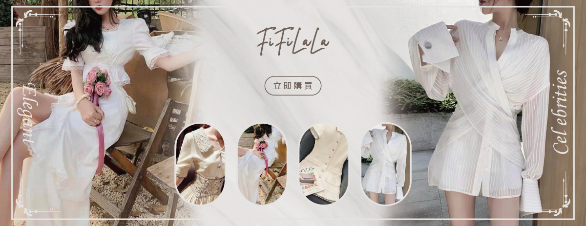

50件以上的banner設計經歷
曾歷經了50多個banner專案。從LOGO、色彩、字體系統，延伸至網站與社群圖像，提供完整一致的網站視覺風格方案。本頁精選並展示客戶最終確認成果。
與客戶溝通、接洽、了解需求，並為他們的網站進行優化動作，包含網站首頁內最重要的banner設計，這影響到了瀏覽者進到該網站時，第一時間是否了解我們客戶的產業與服務。 透過好的視覺設計、好的banner傳達，可以大大提升客戶的認知率，有效減少瀏覽者與站主來回溝通的成本。
註：Banner又稱為廣告橫幅，於網站首頁最上端都會有一張（或多張）主要圖片，闡述此網站提供何種產品或服務，或是祭出優惠特價等消息，吸引瀏覽者能夠多停留在網站上。